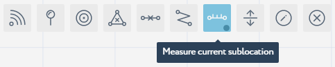

Measure Sub-location Size¶
In the fifths step of the getting started with Navigine Indoor Location Services, you measure a sub-location’s size via the tools in the Navigine Content Management System (CMS).
The aspect ratio of the image that you use with the sub-location should match the aspect ratio of the real object’s physical size, otherwise the navigation accuracy might decrease dramatically.
The following table provides information on how you can measure a sub-location’s size with the Navigine CMS. Perform these actions on each of the sub-locations you create.
| In the Locations tab, click the name of the target location and then click the name of the target sub-location. |  |
| In the main window, click the Measure Current Sub-location tool’s image to active the measuring tool. |  |
| Now add two markers into the picture to measure the distance between them. |  |
The Start and the End values display the vertical/horizontal positions of the markers you’ve just added. With this step you actually align the physical scale of your location with the scale of the image. |
 |
You can choose the layers that you want to be available with the currently open sub-location. To do so,
|
 |
| Click Save to save the measurement results and the set of layers you want to be available later. |  |
Once you finish with the sub-locations size measurement, go to Populate Sub-location with Obstacles.